VLM Council PN + PH + Tournament Evaluation Report
1. Ground-truth statistics
Geo-spatial bias
- North/south bias: strong north bias (p=0.0025)
- East/west bias: no significant bias (p=0.3603)
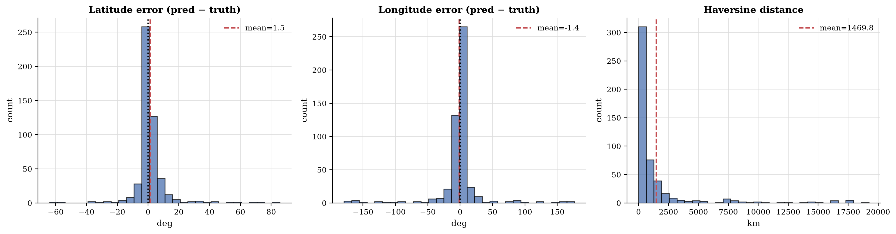
Figure 11: Lat/lng error distribution.
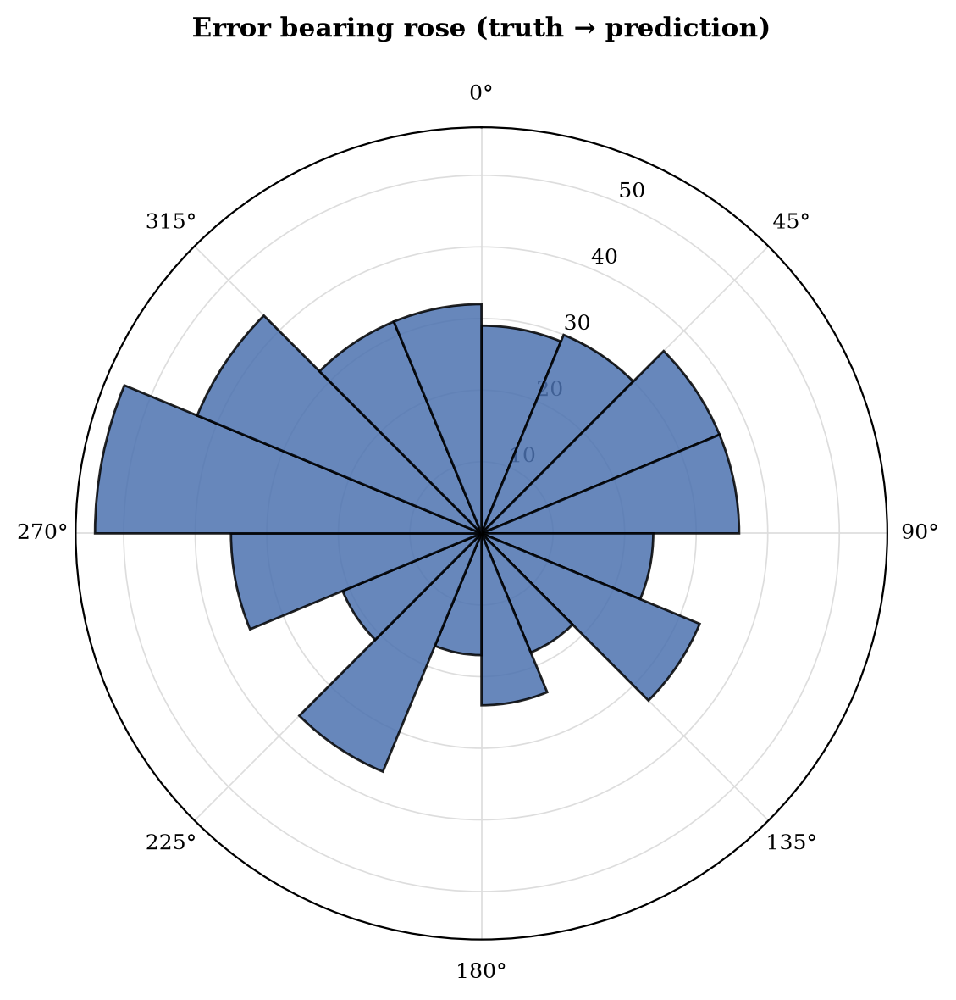
Bearing of prediction errors.
Top confusion pairs
| Truth | Predicted | Count |
|---|---|---|
| south africa | botswana | 5 |
| canada | united states | 4 |
| peru | colombia | 4 |
| indonesia | thailand | 3 |
| panama | puerto rico | 3 |
| uruguay | brazil | 3 |
| indonesia | philippines | 2 |
| argentina | mexico | 2 |
| norway | sweden | 2 |
| south africa | australia | 2 |
| bolivia | brazil | 2 |
| montenegro | croatia | 2 |
| argentina | colombia | 2 |
| sweden | finland | 2 |
| ukraine | russia | 2 |
| hungary | poland | 2 |
| oman | saudi arabia | 2 |
| türkiye | greece | 2 |
| russian federation | ukraine | 2 |
| united states | mexico | 2 |
Per-agent ground-truth accuracy
Initial round
| Agent | n | Top-1 | Top-3 | Coverage |
|---|---|---|---|---|
| linguistic | 107 | 78.5% | 86.0% | 91.6% |
| landscape | 500 | 64.8% | 79.8% | 81.6% |
| botanics | 500 | 63.6% | 78.8% | 80.6% |
| regulatory | 500 | 64.8% | 79.4% | 81.8% |
| meta | 500 | 62.6% | 78.4% | 80.0% |
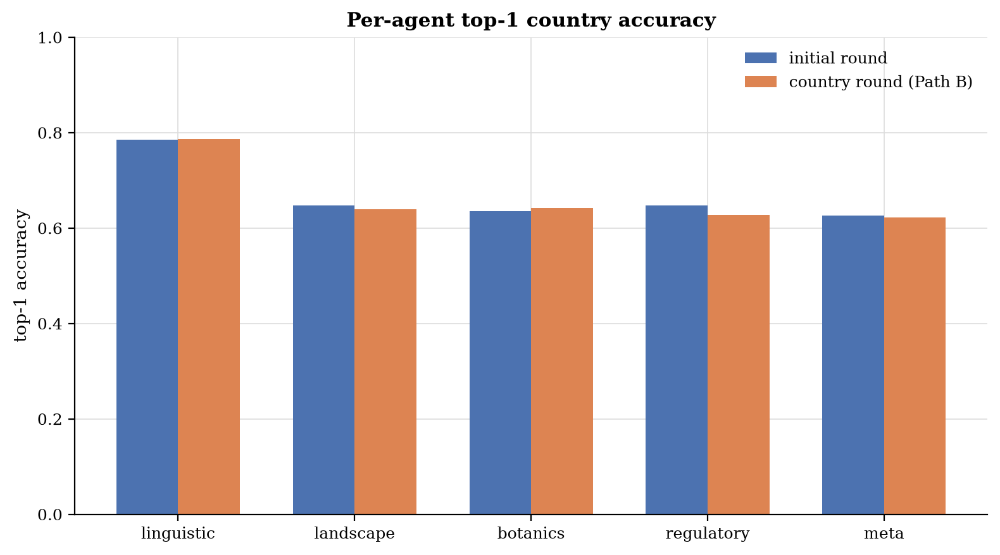
Per-agent top-1 accuracy.
Confidence calibration
Each specialist annotates every candidate in its list with a confidence label (high / medium / low / speculative). These labels are then handed to the tournament judge as evidence, so the relevant question is: when an agent assigns label X to a country, in what fraction of those (image, country) pairs was that country the ground truth?
Per-label hit-rate, P(truth | label)
| Agent | high (n) | medium (n) | low (n) | speculative (n) |
|---|---|---|---|---|
| linguistic | 83.0% (94) | 7.7% (221) | 6.0% (50) | n/a (0) |
| landscape | 58.2% (545) | 9.6% (800) | 3.2% (410) | 0.2% (441) |
| botanics | 56.1% (371) | 21.9% (834) | 1.5% (660) | 0.6% (317) |
| regulatory | 87.8% (131) | 38.8% (547) | 11.0% (664) | 1.4% (630) |
| meta | 83.4% (217) | 27.2% (668) | 6.0% (534) | 1.6% (319) |
| average | 66.2% (1358) | 21.9% (3070) | 5.7% (2318) | 1.0% (1707) |
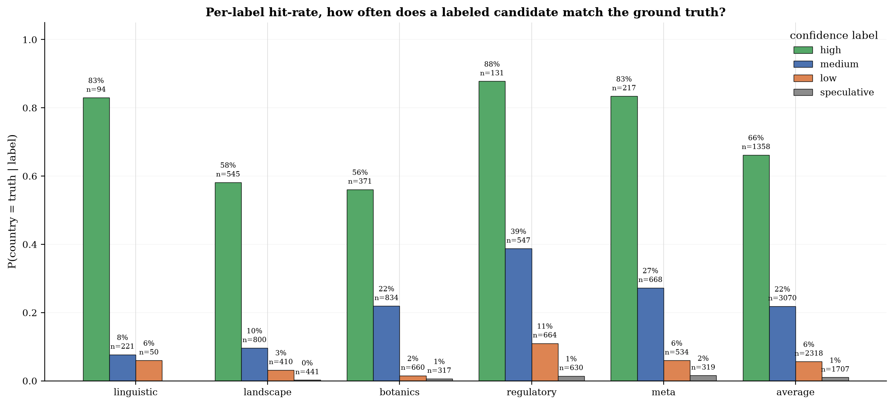
Per-label hit-rate: how often a labeled candidate equals the ground truth. A well-calibrated agent shows monotonically falling bars (high > medium > low > speculative).
Top-1 Brier / ECE
Single-number summary of how well the top-1 pick's confidence
label correlates with being correct. Brier = mean squared error of p
(mapped via {'high': 0.9, 'medium': 0.6, 'low': 0.3, 'speculative': 0.1}) against the 0/1 outcome; ECE = expected
calibration error across confidence bins. Lower is better for both.
| Agent | n | Brier | ECE |
|---|---|---|---|
| linguistic | 107 | 0.136 | 0.053 |
| landscape | 500 | 0.218 | 0.175 |
| botanics | 500 | 0.220 | 0.106 |
| regulatory | 500 | 0.197 | 0.038 |
| meta | 500 | 0.209 | 0.098 |
| average | 2107 | 0.207 | 0.089 |
Geographic world maps
Per-country true-positive rate (TPR = correct div truth = country) and false-positive counts. Macro-averaged TPR across countries with truth: 55.0% (91 countries).
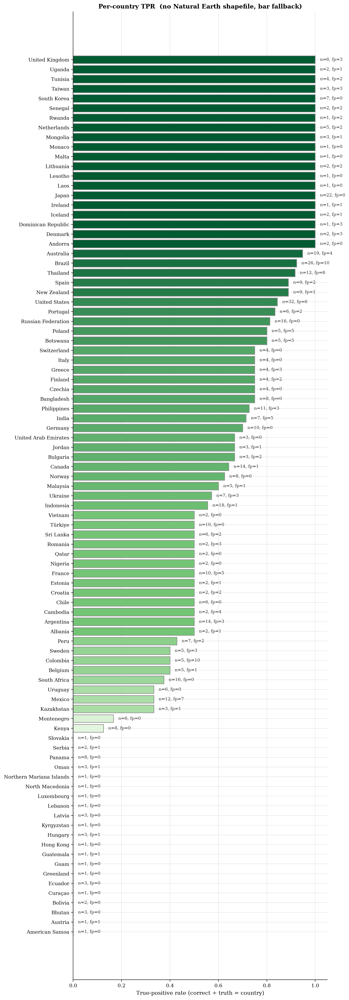
Per-country TPR (green) with FP outlines (red).
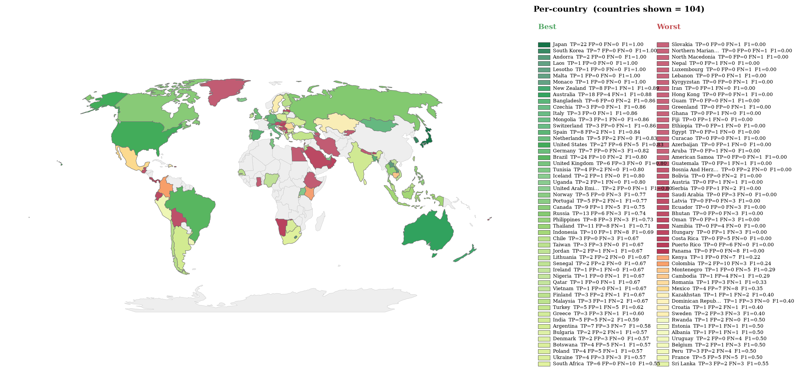
Per-country F1 = 2 P R / (P + R), divergent around the run's macro-F1. Green = above average, red = below average. Alpha scales with sqrt(TP+FP+FN) so low-evidence countries fade out.
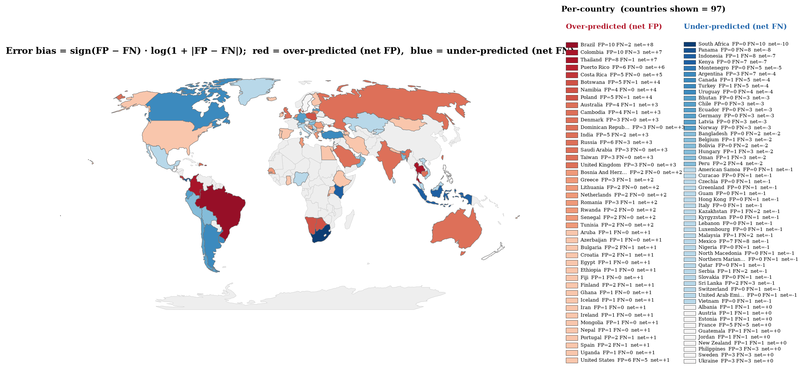
Per-country error bias (FP minus FN)/(FP + FN), TP ignored. Red = the country is over-predicted; blue = the country is missed; pastel tones = mixed FP/FN. Only countries with at least 1 error are drawn.
Per-country breakdown (107 entries)
| Country | n_truth | n_correct | n_predicted | n_false_positive | TPR | PPV |
|---|---|---|---|---|---|---|
| Albania | 2 | 1 | 2 | 1 | 50.0% | 50.0% |
| American Samoa | 1 | 0 | 0 | 0 | 0.0% | n/a |
| Andorra | 2 | 2 | 2 | 0 | 100.0% | 100.0% |
| Argentina | 14 | 7 | 10 | 3 | 50.0% | 70.0% |
| Aruba | 0 | 0 | 1 | 1 | n/a | 0.0% |
| Australia | 19 | 18 | 22 | 4 | 94.7% | 81.8% |
| Austria | 1 | 0 | 1 | 1 | 0.0% | 0.0% |
| Azerbaijan | 0 | 0 | 1 | 1 | n/a | 0.0% |
| Bangladesh | 8 | 6 | 6 | 0 | 75.0% | 100.0% |
| Belgium | 5 | 2 | 3 | 1 | 40.0% | 66.7% |
| Bhutan | 3 | 0 | 0 | 0 | 0.0% | n/a |
| Bolivia | 2 | 0 | 0 | 0 | 0.0% | n/a |
| Bosnia And Herzegovina | 0 | 0 | 2 | 2 | n/a | 0.0% |
| Botswana | 5 | 4 | 9 | 5 | 80.0% | 44.4% |
| Brazil | 26 | 24 | 34 | 10 | 92.3% | 70.6% |
| Bulgaria | 3 | 2 | 4 | 2 | 66.7% | 50.0% |
| Cambodia | 2 | 1 | 5 | 4 | 50.0% | 20.0% |
| Canada | 14 | 9 | 10 | 1 | 64.3% | 90.0% |
| Chile | 6 | 3 | 3 | 0 | 50.0% | 100.0% |
| Colombia | 5 | 2 | 12 | 10 | 40.0% | 16.7% |
| Costa Rica | 0 | 0 | 5 | 5 | n/a | 0.0% |
| Croatia | 2 | 1 | 3 | 2 | 50.0% | 33.3% |
| Curaçao | 1 | 0 | 0 | 0 | 0.0% | n/a |
| Czech Republic | 0 | 0 | 3 | 0 | n/a | 100.0% |
| Czechia | 4 | 3 | 0 | 0 | 75.0% | n/a |
| Denmark | 2 | 2 | 5 | 3 | 100.0% | 40.0% |
| Dominican Republic | 1 | 1 | 4 | 3 | 100.0% | 25.0% |
| Ecuador | 3 | 0 | 0 | 0 | 0.0% | n/a |
| Egypt | 0 | 0 | 1 | 1 | n/a | 0.0% |
| Estonia | 2 | 1 | 2 | 1 | 50.0% | 50.0% |
| Ethiopia | 0 | 0 | 1 | 1 | n/a | 0.0% |
| Fiji | 0 | 0 | 1 | 1 | n/a | 0.0% |
| Finland | 4 | 3 | 5 | 2 | 75.0% | 60.0% |
| France | 10 | 5 | 10 | 5 | 50.0% | 50.0% |
| Germany | 10 | 7 | 7 | 0 | 70.0% | 100.0% |
| Ghana | 0 | 0 | 1 | 1 | n/a | 0.0% |
| Greece | 4 | 3 | 6 | 3 | 75.0% | 50.0% |
| Greenland | 1 | 0 | 0 | 0 | 0.0% | n/a |
| Guam | 1 | 0 | 0 | 0 | 0.0% | n/a |
| Guatemala | 1 | 0 | 1 | 1 | 0.0% | 0.0% |
| Hong Kong | 1 | 0 | 0 | 0 | 0.0% | n/a |
| Hungary | 3 | 0 | 1 | 1 | 0.0% | 0.0% |
| Iceland | 2 | 2 | 3 | 1 | 100.0% | 66.7% |
| India | 7 | 5 | 10 | 5 | 71.4% | 50.0% |
| Indonesia | 18 | 10 | 11 | 1 | 55.6% | 90.9% |
| Iran | 0 | 0 | 1 | 1 | n/a | 0.0% |
| Ireland | 1 | 1 | 2 | 1 | 100.0% | 50.0% |
| Italy | 4 | 3 | 3 | 0 | 75.0% | 100.0% |
| Japan | 22 | 22 | 22 | 0 | 100.0% | 100.0% |
| Jordan | 3 | 2 | 3 | 1 | 66.7% | 66.7% |
| Kazakhstan | 3 | 1 | 2 | 1 | 33.3% | 50.0% |
| Kenya | 8 | 1 | 1 | 0 | 12.5% | 100.0% |
| Kyrgyzstan | 1 | 0 | 0 | 0 | 0.0% | n/a |
| Laos | 1 | 1 | 1 | 0 | 100.0% | 100.0% |
| Latvia | 3 | 0 | 0 | 0 | 0.0% | n/a |
| Lebanon | 1 | 0 | 0 | 0 | 0.0% | n/a |
| Lesotho | 1 | 1 | 1 | 0 | 100.0% | 100.0% |
| Lithuania | 2 | 2 | 4 | 2 | 100.0% | 50.0% |
| Luxembourg | 1 | 0 | 0 | 0 | 0.0% | n/a |
| Malaysia | 5 | 3 | 4 | 1 | 60.0% | 75.0% |
| Malta | 1 | 1 | 1 | 0 | 100.0% | 100.0% |
| Mexico | 12 | 4 | 11 | 7 | 33.3% | 36.4% |
| Monaco | 1 | 1 | 1 | 0 | 100.0% | 100.0% |
| Mongolia | 3 | 3 | 4 | 1 | 100.0% | 75.0% |
| Montenegro | 6 | 1 | 1 | 0 | 16.7% | 100.0% |
| Namibia | 0 | 0 | 4 | 4 | n/a | 0.0% |
| Nepal | 0 | 0 | 1 | 1 | n/a | 0.0% |
| Netherlands | 5 | 5 | 7 | 2 | 100.0% | 71.4% |
| New Zealand | 9 | 8 | 9 | 1 | 88.9% | 88.9% |
| Nigeria | 2 | 1 | 1 | 0 | 50.0% | 100.0% |
| North Macedonia | 1 | 0 | 0 | 0 | 0.0% | n/a |
| Northern Mariana Islands | 1 | 0 | 0 | 0 | 0.0% | n/a |
| Norway | 8 | 5 | 5 | 0 | 62.5% | 100.0% |
| Oman | 3 | 0 | 1 | 1 | 0.0% | 0.0% |
| Panama | 8 | 0 | 0 | 0 | 0.0% | n/a |
| Peru | 7 | 3 | 5 | 2 | 42.9% | 60.0% |
| Philippines | 11 | 8 | 11 | 3 | 72.7% | 72.7% |
| Poland | 5 | 4 | 9 | 5 | 80.0% | 44.4% |
| Portugal | 6 | 5 | 7 | 2 | 83.3% | 71.4% |
| Puerto Rico | 0 | 0 | 6 | 6 | n/a | 0.0% |
| Qatar | 2 | 1 | 1 | 0 | 50.0% | 100.0% |
| Romania | 2 | 1 | 4 | 3 | 50.0% | 25.0% |
| Russia | 0 | 0 | 19 | 6 | n/a | 68.4% |
| Russian Federation | 16 | 13 | 0 | 0 | 81.2% | n/a |
| Rwanda | 1 | 1 | 3 | 2 | 100.0% | 33.3% |
| Saudi Arabia | 0 | 0 | 3 | 3 | n/a | 0.0% |
| Senegal | 2 | 2 | 4 | 2 | 100.0% | 50.0% |
| Serbia | 2 | 0 | 1 | 1 | 0.0% | 0.0% |
| Slovakia | 1 | 0 | 0 | 0 | 0.0% | n/a |
| South Africa | 16 | 6 | 6 | 0 | 37.5% | 100.0% |
| South Korea | 7 | 7 | 7 | 0 | 100.0% | 100.0% |
| Spain | 9 | 8 | 10 | 2 | 88.9% | 80.0% |
| Sri Lanka | 6 | 3 | 5 | 2 | 50.0% | 60.0% |
| Sweden | 5 | 2 | 5 | 3 | 40.0% | 40.0% |
| Switzerland | 4 | 3 | 3 | 0 | 75.0% | 100.0% |
| Taiwan | 3 | 3 | 6 | 3 | 100.0% | 50.0% |
| Thailand | 12 | 11 | 19 | 8 | 91.7% | 57.9% |
| Tunisia | 4 | 4 | 6 | 2 | 100.0% | 66.7% |
| Turkey | 0 | 0 | 6 | 1 | n/a | 83.3% |
| Türkiye | 10 | 5 | 0 | 0 | 50.0% | n/a |
| Uganda | 2 | 2 | 3 | 1 | 100.0% | 66.7% |
| Ukraine | 7 | 4 | 7 | 3 | 57.1% | 57.1% |
| United Arab Emirates | 3 | 2 | 2 | 0 | 66.7% | 100.0% |
| United Kingdom | 6 | 6 | 9 | 3 | 100.0% | 66.7% |
| United States | 32 | 27 | 33 | 6 | 84.4% | 81.8% |
| Uruguay | 6 | 2 | 2 | 0 | 33.3% | 100.0% |
| Vietnam | 2 | 1 | 1 | 0 | 50.0% | 100.0% |
2. Approach dynamics
Region narrowing funnel and tournament bracket dynamics
This approach narrows the world to a region, builds a candidate pool inside that region, then runs a 1v1 country tournament. The tables below trace whether the ground truth survives each narrowing gate and how the bracket behaves.
Candidate pool size: mean 4.65, median 5, max 8.
Tournament shape distribution
| Shape | Count | Share |
|---|---|---|
| full-bracket | 405 | 81.0% |
| 3-way (semi+final) | 61 | 12.2% |
| final-only | 20 | 4.0% |
| walkover | 14 | 2.8% |
Ground truth narrowing funnel (n = 500 images with ground truth)
Each stage is a binary check on whether the ground truth was still reachable after that narrowing step. A gate that drops the truth can never be recovered downstream, so the survival rate strictly falls.
| Stage | Description | Truth survives |
|---|---|---|
| S0 | GT region proposed | 484/500 (96.8%) |
| S1 | GT region survived PN vote | 464/500 (92.8%) |
| S2 | GT region confirmed | 438/500 (87.6%) |
| S2b | GT region confirmed or runner up | 464/500 (92.8%) |
| S3 | GT country in candidate pool | 421/500 (84.2%) |
| S3b | GT country in pool top 3 | 379/500 (75.8%) |
| S3c | GT country is pool top seed | 314/500 (62.8%) |
| S4 | GT country reached tournament final | 356/500 (71.2%) |
| S5 | GT country won tournament | 324/500 (64.8%) |
| S6 | Final judge country is GT | 324/500 (64.8%) |
Tournament bracket dynamics
| Metric | Value |
|---|---|
| Total 1v1 matches | 1357 |
| Judge agrees with specialists | 1339 (98.7%) |
| Judge overruled a specialist | 18 (1.3%) |
| Bracket upsets (lower seed beat higher seed) | 67 (4.9%) |
| Finals played | 486 |
| Top seed wins final | 473 (97.3%) |
Tournament decisions vs ground truth
A decisive match is one where the truth was on exactly one side, so the tournament could get it right or wrong. Upsets that move toward truth are the value the bracket adds over the pool ranking.
| Metric | Value |
|---|---|
| Decisive matches | 736 |
| Toward truth (winner = truth) | 651 (88.5%) |
| Away from truth (winner not truth) | 85 |
| Both wrong (truth not in match) | 621 |
| Upsets total | 67 |
| Upsets toward truth | 10 (14.9%) |
| Upsets away from truth | 7 |
Pipeline funnel, where does the truth get lost?
Each stage is a binary check on whether the ground-truth country was still reachable after that stage of the pipeline. Cumulative survival = truth survived all stages from S0 up to and including this one. Conditional rate = survivors / survivors of the previous stage. Wilson 95% confidence intervals.
Bottleneck: stage S1, Confirmed/proposed region matches truth. Conditional survival here is 0.0% [0.0%, 0.9%].
| Stage | Description | Cumulative survival | Conditional on prev |
|---|---|---|---|
| S0 | Truth in any initial-round top-K | 87.6% [84.4%, 90.2%] | 87.6% [84.4%, 90.2%] |
| S1 | Confirmed/proposed region matches truth | 0.0% [0.0%, 0.8%] | 0.0% [0.0%, 0.9%] |
| S2 | Truth in country-round top-K (Path B) / region OK (Path A) | 0.0% [0.0%, 0.8%] | n/a |
| S3 | Truth in candidate pool | 0.0% [0.0%, 0.8%] | n/a |
| S4 | Truth wins the tournament final | 0.0% [0.0%, 0.8%] | n/a |
| S5 | Final predicted country matches truth | 64.8% [60.5%, 68.9%] | n/a |
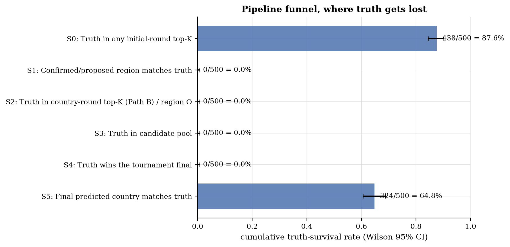
Pipeline funnel survival per stage with Wilson 95% CI.
Oracle ceilings
Each oracle row shows what the end-to-end accuracy would be if a particular pipeline stage made no mistakes.
| Scenario | Accuracy (95% CI) | Delta vs. actual |
|---|---|---|
| Actual pipeline | 64.8% [60.5%, 68.9%] | n/a |
| Baseline: majority-vote of 5 agents | 65.0% [60.7%, 69.1%] | +0.2% |
| Oracle region | 65.2% [60.9%, 69.2%] | +0.4% |
| Oracle pool | 90.2% [87.3%, 92.5%] | +25.4% |
| Oracle tournament | 84.2% [80.7%, 87.1%] | +19.4% |
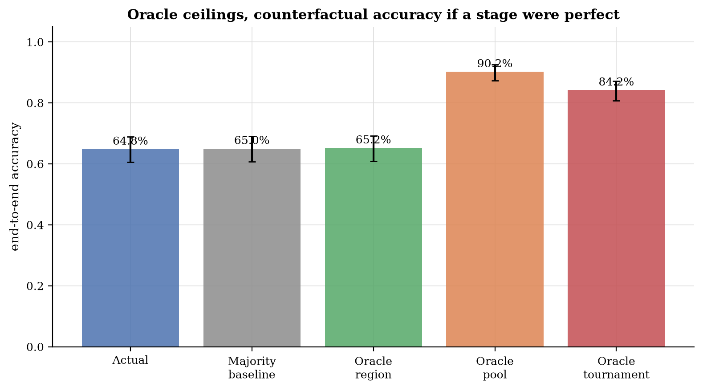
Counterfactual accuracy under perfect-stage oracles.
Tournament diagnostics
The judge runs each match twice (forward + reverse positions) and only commits a winner if both runs agree;
otherwise it falls back to pool-rank. country_a/country_b are bracket slots, not prompt positions.
Agreement distribution (n=1357 matches):
- both runs agree: 98.7% [97.9%, 99.2%]
- only forward: 0.0% [0.0%, 0.3%]
- only reverse: 0.0% [0.0%, 0.3%]
- disagree, pool-rank tiebreak: 1.3% [0.8%, 2.1%]
- both empty, pool-rank tiebreak: 0.0% [0.0%, 0.3%]
Pool-seed bias (does the higher-seeded country win?): 95.1% [93.8%, 96.1%]
Truth match-win rate: 88.5% [85.9%, 90.6%]
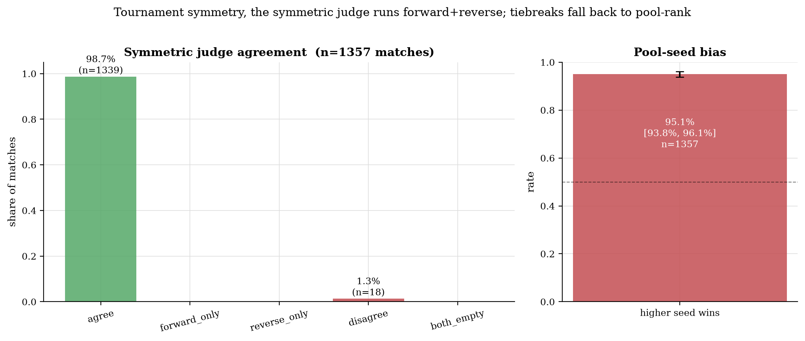
Symmetric judge agreement and pool-seed-bias check.
Agreement vs. accuracy
Bucketed by how many of the 5 agents picked the same top-1 country.
| Agents agreeing | n | Accuracy (95% CI) |
|---|---|---|
| 5/5 | 91 | 86.8% [78.4%, 92.3%] |
| 4/5 | 281 | 74.0% [68.6%, 78.8%] |
| 3/5 | 76 | 27.6% [18.8%, 38.6%] |
| 2/5 | 50 | 32.0% [20.8%, 45.8%] |
| 1/5 | 2 | 0.0% [0.0%, 65.8%] |
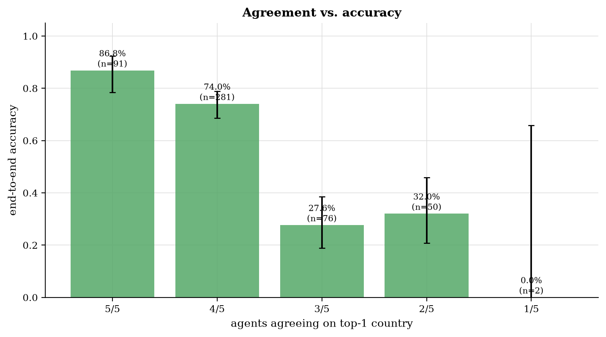
Initial-round agent agreement vs. final accuracy.
Path A vs. Path B
| Metric | Path A | Path B |
|---|---|---|
| n | 0 | 500 |
| Country accuracy | n/a | 64.8% [60.5%, 68.9%] |
| Median haversine | n/a | 421 km |
| Mean total seconds | 0.0 s | 118.9 s |
Severity of errors
Of 176 wrong predictions (out of 500 total):
- near-miss (haversine < 500 km): 35
- same-region wrong: 0
- wrong region: 0
Near-miss examples (15)
| Image | Truth | Pred | Haversine |
|---|---|---|---|
| 1NJsXTxIF9GGMDxC_3 | serbia | bosnia and herzegovina | 130 km |
| 3I4ZtihbhZy5qZzQ_1 | bangladesh | india | 77 km |
| 3uP6lYo9pzx5Q0km_2 | norway | sweden | 218 km |
| 5bPlIRT7eGN79a2E_5 | chile | argentina | 427 km |
| 6ypQOh9cOoE7WaWH_1 | montenegro | bosnia and herzegovina | 138 km |
| 8Uo6ejwXYqmp9av3_2 | norway | denmark | 421 km |
| DKGAIVKGYnLWmMy9_1 | montenegro | croatia | 287 km |
| DKGAIVKGYnLWmMy9_5 | serbia | romania | 425 km |
| JnTw9kl2nWPFaoUg_2 | france | belgium | 84 km |
| KZ2f6LqzJRyChcg8_2 | latvia | lithuania | 232 km |
| Lz6IDBZmUTr5oPdV_1 | hungary | poland | 484 km |
| MjBPBTn3iUXdebSu_2 | south africa | botswana | 452 km |
| MjBPBTn3iUXdebSu_5 | türkiye | greece | 474 km |
| N2IFsQAIIcXPuNKn_2 | montenegro | bulgaria | 489 km |
| STQGgl6Uh9muExNb_3 | ukraine | russia | 493 km |
Tournament anchoring, does the bracket actually re-rank?
Of 486 images with a non-trivial pool (at least 2 candidates), the tournament winner equals the top-seeded candidate 91.4% of the time (n=444). When anchored, the seed was correct 67.3% of the time.
Of the 42 re-ranked images (winner not top seed): 17 flipped toward truth, 7 flipped away, 18 neutral. Net help: +10 images.
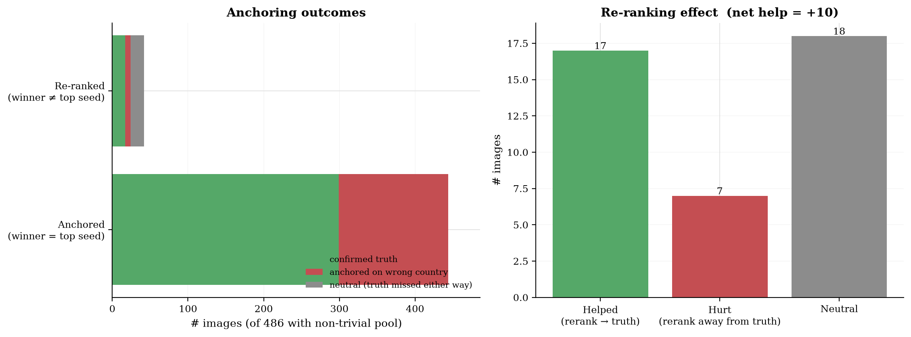
Anchoring vs. re-ranking outcomes. Left: stacked outcomes split by whether the tournament confirmed the top seed; right: net effect of re-ranking on truth recovery.
Re-ranking saved truth (8 examples)
| Image | Top seed | Tournament winner | Truth |
|---|---|---|---|
| 1NJsXTxIF9GGMDxC_5 | Botswana | South Africa | south africa |
| 2xnQdwiCve2rHWVt_5 | Spain | Portugal | portugal |
| 3I4ZtihbhZy5qZzQ_3 | United States | Canada | canada |
| 3uP6lYo9pzx5Q0km_3 | Poland | Czech Republic | czechia |
| 56Q4T4rpv9O9sCpP_3 | India | Sri Lanka | sri lanka |
| 6fGwHxCTvCbaK77Q_2 | Cambodia | India | india |
| 74bPHM081cMUaNKT_1 | Kazakhstan | Mongolia | mongolia |
| EEI3fwu4iZvPT2zP_1 | Ethiopia | Rwanda | rwanda |
Re-ranking flipped away from truth (7 examples)
| Image | Top seed (= truth) | Tournament winner | Truth |
|---|---|---|---|
| 1NJsXTxIF9GGMDxC_1 | Kyrgyzstan | Azerbaijan | kyrgyzstan |
| JfPkjboMSjCsG1Qu_4 | Colombia | Mexico | colombia |
| aKDWzyoV4cSA6Da2_3 | Australia | New Zealand | australia |
| aKDWzyoV4cSA6Da2_5 | Belgium | Netherlands | belgium |
| lesmx8gOI1f44LS4_1 | Spain | Portugal | spain |
| qREuLz0JK8CfSFMC_3 | Germany | Denmark | germany |
| sf2wEErB2IDY3qJ5_1 | Kazakhstan | Mongolia | kazakhstan |
RAG utility, does retrieval actually move the needle?
Of 486 images with a non-trivial pool, 3.1% had at least one verified RAG reference surface (n=15; mean refs/image = 0.1, mean countries with refs/image = 0.1).
Pre-filter eliminations (driving-side / road-marking veto): 136 candidates dropped before the tournament; truth was killed by the pre-filter 0 time(s) (rate 0.0%).
Per-veto breakdown, when truth gets killed here, either the LLM's observation of the image is wrong or the country-side reference table is wrong.
| Veto kind | Eliminations | Truth killed | Truth-kill rate |
|---|---|---|---|
| driving-side | 42 | 0 | 0.0% |
| road-marking | 94 | 0 | 0.0% |
Per-match ref availability (across 1357 tournament matches): both sides have refs in 12, asymmetric in 22 (1.6%), neither side has refs in 1323.
In the 22 asymmetric matches, the ref-side wins 90.9% of the time (n=20). When the ref-side wins, it equals the truth 55.0% of the time, i.e. ref-asymmetry steers toward truth in 11 of 20 ref-side wins.
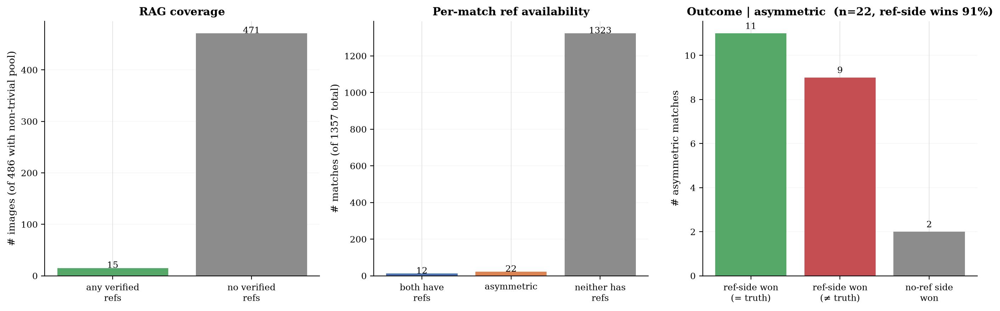
RAG utility, coverage (left), per-match ref availability (middle), and outcome of asymmetric matches (right). The "ref-side won (= truth)" column is the only one that demonstrates RAG steering the bracket toward the correct answer.
RAG-asymmetric matches won by the ref-side (= truth, 8 examples)
| Image | Round | Winner | Truth |
|---|---|---|---|
| 1NJsXTxIF9GGMDxC_5 | semi-2 | South Africa | south africa |
| 1NJsXTxIF9GGMDxC_5 | final | South Africa | south africa |
| 3uP6lYo9pzx5Q0km_3 | semi-2 | Czech Republic | czechia |
| 3uP6lYo9pzx5Q0km_3 | final | Czech Republic | czechia |
| 56Q4T4rpv9O9sCpP_4 | semi-1 | Australia | australia |
| 56Q4T4rpv9O9sCpP_4 | final | Australia | australia |
| amHvOfYODNHwXiJg_1 | semi-1 | Norway | norway |
| amHvOfYODNHwXiJg_2 | semi-2 | Sweden | sweden |
RAG-asymmetric matches where ref-side won but truth was the other side (3 examples)
| Image | Round | Ref-side winner | Truth |
|---|---|---|---|
| aKDWzyoV4cSA6Da2_2 | semi | Oman | united arab emirates |
| aKDWzyoV4cSA6Da2_5 | final | Netherlands | belgium |
| lesmx8gOI1f44LS4_1 | final | Portugal | spain |
3. LLM-as-judge verdicts
Verdicts: 500 / 500 . Constructive synthesis: 100.0% (n=500)
Per-agent quantitative scores
| Agent | n | Role adher. | Hallucination (lower is better) | Visual cons. (higher is better) | Calibration (higher is better) |
|---|---|---|---|---|---|
| linguistic | 500 | 100.0% | 0.01 ± 0.06 | 0.99 ± 0.07 | 0.57 ± 0.19 |
| landscape | 500 | 100.0% | 0.01 ± 0.06 | 0.91 ± 0.04 | 0.68 ± 0.28 |
| botanics | 500 | 100.0% | 0.02 ± 0.08 | 0.90 ± 0.07 | 0.66 ± 0.26 |
| regulatory | 500 | 100.0% | 0.02 ± 0.10 | 0.91 ± 0.08 | 0.64 ± 0.26 |
| meta | 500 | 100.0% | 0.06 ± 0.19 | 0.87 ± 0.16 | 0.68 ± 0.31 |

Per-agent role adherence rate.

Per-agent mean hallucination score (0 = clean, 1 = severe).

Per-agent mean visual consistency.
Tournament failure attribution
For matches where the truth was in the candidate pool but did not win, the judge classifies why. Counterfactual winnable rate: 26.6% (173 attributable losses).
| Failure reason | Count |
|---|---|
| agent_misled_in_tournament | 58 |
| ambiguous_evidence | 32 |
| not_applicable | 327 |
| judge_misjudgment | 23 |
| agent_misled_pre_pool | 57 |
| missing_rag_refs | 3 |

Tournament failure attribution histogram.
Failure examples (20)
1NJsXTxIF9GGMDxC_1, agent_misled_in_tournament (lost to Azerbaijan)
Round: final . Counterfactual winnable: yes
The meta and regulatory agents hallucinated a strong link between the green totem and Azerbaijan (SOCAR), assigning 'strongly_support' to Azerbaijan while giving only 'support' to Kyrgyzstan. This misleading evidence caused the tournament to discard the correct country.
1NJsXTxIF9GGMDxC_2, agent_misled_in_tournament (lost to Taiwan)
Round: final . Counterfactual winnable: no
The specialists collectively hallucinated that the visible infrastructure (concrete gutters, guardrails) was a unique signature of Taiwan/Japan, assigning 'strongly_support' to Taiwan and 'support' to Japan while giving 'low' confidence to Malaysia (which was in the pool). This misleading evidence set the tournament up to fail, as the judge had no basis to prefer the correct country (Malaysia) over the incorrect one (Taiwan).
1NJsXTxIF9GGMDxC_3, ambiguous_evidence (lost to Bosnia and Herzegovina)
Round: final . Counterfactual winnable: no
The image features generic socialist-era architecture and standard European signage common to both Serbia and Bosnia. The agents correctly identified both as candidates but lacked specific visual differentiators (like unique text or distinct landmarks). The final decision was based on 'meta' cues (camera artifacts, building colors) which are ambiguous and insufficient to definitively rule out the ground truth.
2xnQdwiCve2rHWVt_1, judge_misjudgment (lost to Brazil)
Round: final . Counterfactual winnable: yes
The specialists unanimously and strongly supported Thailand (the truth) based on clear visual evidence (utility poles, vegetation). The judge ignored this overwhelming consensus and hallucinated a win for Brazil, which was explicitly contradicted by the regulatory and meta agents.
3I4ZtihbhZy5qZzQ_1, judge_misjudgment (lost to India)
Round: final . Counterfactual winnable: yes
The truth (Bangladesh) and the winner (India) were visually indistinguishable based on the provided evidence (landscape, botanics, regulatory). The meta-agent provided weak evidence favoring India based on 'image quality' and 'pole style' which are not reliable differentiators. The judge accepted this weak signal over the neutral/indistinguishable signal for Bangladesh, resulting in a misjudgment.
3I4ZtihbhZy5qZzQ_5, agent_misled_in_tournament (lost to Colombia)
Round: final . Counterfactual winnable: yes
The meta agent hallucinated a specific camera hood artifact ('grey/silver color... characteristic of Colombia') that was not visible in the image. This fabricated evidence was treated as a 'strongly_support' signal by the tournament judge, overriding the generic but accurate evidence for Panama.
3OuVMcpGjmm0tVfG_1, agent_misled_in_tournament (lost to Philippines)
Round: semi-1 . Counterfactual winnable: yes
The landscape agent assigned 'strongly_support' to the Philippines based on a specific, likely hallucinated claim about volcanic rock embankments being characteristic of the Philippines, while giving only 'support' to Indonesia. This biased the tournament judge to pick the wrong country.
3OuVMcpGjmm0tVfG_5, agent_misled_pre_pool (lost to Mexico)
Round: final . Counterfactual winnable: no
Argentina was not included in the candidate pool.
3uP6lYo9pzx5Q0km_2, judge_misjudgment (lost to Sweden)
Round: final . Counterfactual winnable: yes
The specialists provided comparable support for both Sweden and Norway (both 'support' or 'strongly_support'). The judge selected Sweden based on the claim that the terrain is 'more gently rolling than typical Norwegian landscapes,' which is a subjective visual judgment that contradicts the reality that such terrain is common in Norway. The judge had sufficient evidence to be uncertain but made a definitive, incorrect choice.
3uP6lYo9pzx5Q0km_4, judge_misjudgment (lost to Thailand)
Round: semi-1 . Counterfactual winnable: yes
The truth (Indonesia) and the winner (Thailand) were visually indistinguishable based on the provided evidence. The judge's reasoning ('slightly more typical of Thai rural infrastructure') was a subjective preference rather than a deduction from the image, as the specialists had rated both countries as 'support' with no decisive differentiator.
3uP6lYo9pzx5Q0km_5, agent_misled_pre_pool (lost to Romania)
Round: final . Counterfactual winnable: no
Montenegro was not in the candidate pool for the final tournament.
4UvmdTHySo6AXW4M_1, agent_misled_pre_pool (lost to United Kingdom)
Round: final . Counterfactual winnable: no
Luxembourg was not in the candidate pool. The agents correctly narrowed it to the British Isles/France/Belgium region but could not distinguish Luxembourg from the UK due to visual similarity.
4UvmdTHySo6AXW4M_5, agent_misled_in_tournament (lost to India)
Round: final . Counterfactual winnable: no
The landscape and botanics agents assigned 'high' confidence to India/Pakistan and 'low' to Cambodia/Thailand, effectively locking the region decision to South Asia. The meta agent gave Cambodia only 'low' confidence. The specialists collectively misled the judge away from the truth.
56Q4T4rpv9O9sCpP_2, ambiguous_evidence (lost to Australia)
Round: final . Counterfactual winnable: no
The image contains strong visual cues (Eucalyptus, red soil, rolling hills) that are ambiguous between Australia and South Africa. The agents correctly identified these features but lacked the specific regulatory or linguistic markers to disambiguate. The 'Eucalyptus = Australia' bias led to high confidence in the wrong country, but the evidence itself was genuinely under-determined.
56Q4T4rpv9O9sCpP_5, agent_misled_in_tournament (lost to Botswana)
Round: final . Counterfactual winnable: no
The meta agent hallucinated a 'circular blur' artifact as a specific indicator for Botswana. This false evidence was treated as a 'strong' signal by the tournament judge, overriding the visual reality and leading to the incorrect prediction.
5GS2RPgTrf85UZM5_3, agent_misled_pre_pool (lost to Brazil)
Round: final . Counterfactual winnable: no
Bolivia was not in the candidate pool for the final tournament.
5bPlIRT7eGN79a2E_3, agent_misled_in_tournament (lost to Argentina)
Round: semi-1 . Counterfactual winnable: yes
The 'meta' agent assigned 'strongly_support' to Argentina based on a hallucinated camera artifact, while assigning 'low' confidence to Mexico. This skewed the region decision and the final tournament bracket, effectively misleading the judge away from the truth.
5bPlIRT7eGN79a2E_5, agent_misled_in_tournament (lost to Argentina)
Round: final . Counterfactual winnable: yes
The meta agent hallucinated a specific visual feature (hood shape/color) and falsely associated it with Argentina. This fabricated evidence was weighted heavily in the final tournament, overriding the neutral/ambiguous visual evidence that actually supported Chile.
5l0GTCFZI877KxkV_1, agent_misled_in_tournament (lost to Colombia)
Round: semi-1 . Counterfactual winnable: yes
The 'meta' agent assigned 'low' confidence to Mexico and 'strongly_support' to Colombia based on the yellow curbs, despite the landscape agent strongly supporting Mexico. The regulatory agent also shifted to Colombia. The specialists collectively misled the judge away from the truth.
67gLC5CcGgkQIWEW_5, agent_misled_in_tournament (lost to Cambodia)
Round: semi-1 . Counterfactual winnable: yes
The meta-agent hallucinated specific diagnostic features (hood shape, pole style) for Cambodia and assigned 'strongly_support' to it while giving 'low' confidence to the Philippines. This biased the tournament setup, causing the judge to pick Cambodia over the truth.
Hallucination examples
linguistic, 5 flagged claims
| Image | Score | Hallucinated claim |
|---|---|---|
| 8Uo6ejwXYqmp9av3_2 | 0.50 | claimed 'MURMESTER' is 'strongly indicative of Denmark' (it is a standard Norwegian term for bricklayer) |
| JnTw9kl2nWPFaoUg_5 | 0.50 | 'Muki' is a common name/word in Luganda, the primary language of Uganda |
| oIqmyQzBGtaIeI84_4 | 0.75 | The text 'SOLGAS' refers to a gas distribution company that operates primarily in Colombia. |
| oIqmyQzBGtaIeI84_4 | 0.75 | The text 'SOLGAS' refers to a well-known LPG gas distribution company operating in Colombia. |
| z2mhsiTu4DYWixQf_5 | 0.75 | The sign on the left contains the word 'سورية' (Syria/Syrian) |
landscape, 5 flagged claims
| Image | Score | Hallucinated claim |
|---|---|---|
| 1NJsXTxIF9GGMDxC_2 | 0.50 | claimed concrete drainage gutters are 'very characteristic of Taiwan's central mountain ranges' (also common in Malaysia/Australia) |
| 3OuVMcpGjmm0tVfG_1 | 0.50 | claimed 'volcanic-looking grey rocky embankments' are 'highly characteristic of the Philippine archipelago' (a specific, unsupported generalization used to bias the decision) |
| 3OuVMcpGjmm0tVfG_1 | 0.50 | claimed 'volcanic rock roadside borders' are 'highly characteristic of the Philippine archipelago' |
| 3uP6lYo9pzx5Q0km_2 | 0.50 | Claimed the terrain is 'more gently rolling than typical Norwegian landscapes' to justify Sweden over Norway; the image shows a gentle slope that is equally characteristic of coastal Norway. |
| 3uP6lYo9pzx5Q0km_2 | 0.50 | Repeatedly cited 'exposed granite outcrops' as a strong indicator for Sweden, whereas the image shows generic rocky outcrops common to both countries. |
botanics, 5 flagged claims
| Image | Score | Hallucinated claim |
|---|---|---|
| 1NJsXTxIF9GGMDxC_2 | 0.50 | claimed fern abundance is 'highly characteristic of Taiwan's central mountain ranges' (generic to humid tropics) |
| 4UvmdTHySo6AXW4M_5 | 0.50 | claimed 'Prosopis juliflora (mesquite)' visible in scrub — not identifiable from image |
| 4UvmdTHySo6AXW4M_5 | 0.50 | claimed 'Triticum aestivum (Winter Wheat)' — crop is too distant to identify species |
| 5l0GTCFZI877KxkV_4 | 0.20 | botanics agent cited 'terraced paddy fields' in Phase 1 evidence; the foreground field appears to be a harvested grassy plot or fallow field, not a flooded paddy. |
| 6ypQOh9cOoE7WaWH_3 | 0.25 | claimed 'eucalyptus plantations' are visible — the background vegetation is generic montane forest/scrub, not clearly identifiable as eucalyptus. |
regulatory, 5 flagged claims
| Image | Score | Hallucinated claim |
|---|---|---|
| 1NJsXTxIF9GGMDxC_1 | 0.50 | The green fuel price totem displays 'AZS', which is the standard abbreviation for Azerbaijan Manat (AZN) fuel stations. |
| 1NJsXTxIF9GGMDxC_2 | 0.75 | claimed concrete drainage gutter style is 'very common in mountainous regions of Taiwan' (implies exclusivity not supported by image) |
| 8Uo6ejwXYqmp9av3_2 | 0.50 | claimed 'Murmester' terminology is 'strongly Danish' (misleading/incorrect) |
| IozkbMt8zbdH9XCv_3 | 0.20 | regulatory agent claimed 'blue and white painted curbs' are a 'frequent regulatory marker in Iranian cities' (unsupported generalization). |
| JfPkjboMSjCsG1Qu_5 | 0.50 | regulatory agent: 'blue rectangular informational sign with white border' (Image shows blue sign with yellow border) |
meta, 5 flagged claims
| Image | Score | Hallucinated claim |
|---|---|---|
| 1NJsXTxIF9GGMDxC_1 | 0.50 | The green fuel price totem is highly characteristic of SOCAR stations in Azerbaijan. |
| 1NJsXTxIF9GGMDxC_2 | 0.75 | claimed concrete drainage gutter is a 'hallmark of infrastructure in Japan and Taiwan' (ignores other regions with similar infrastructure) |
| 3I4ZtihbhZy5qZzQ_5 | 0.75 | The Google Street View camera car hood is visible and has a distinct grey/silver color and shape characteristic of the coverage in several South American countries, particularly Colombia. |
| 3I4ZtihbhZy5qZzQ_5 | 0.75 | The specific Google car hood color (greyish-white) and the style of the concrete perimeter walls... is very common in Colombian urban/industrial areas. |
| 4UvmdTHySo6AXW4M_5 | 0.20 | claimed 'specific blur patterns... consistent with Google Trekker' — generic artifacts cited as specific evidence |